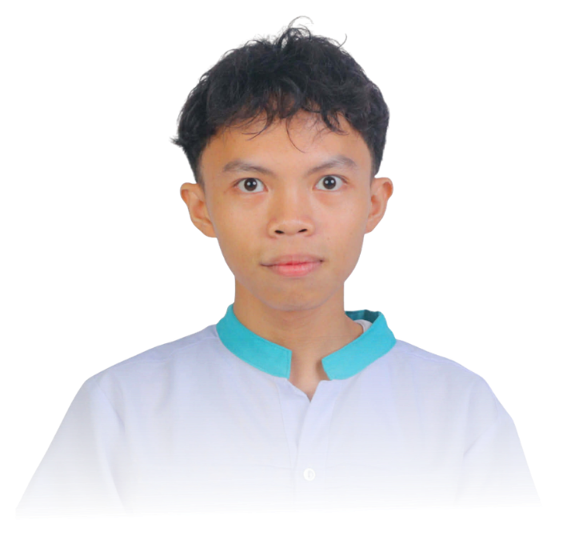
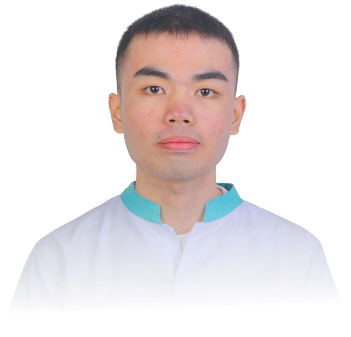
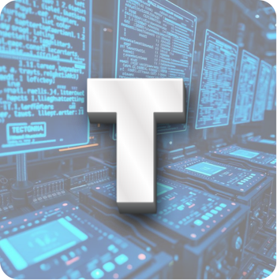
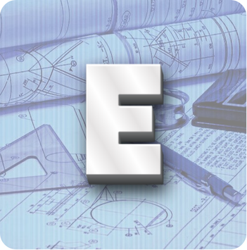

OUR TEAM
Click on a team member to learn more about them. Their biography will appear below once selected.



Mary Elaine Bernardo
Senior High School STEM student with a strong interest in technology and a solid foundation in logical thinking.
Shows the ability to work effectively both independently and in collaborative environments. Applies basic technical
knowledge and problem-solving skills to real-world challenges. Actively seeks opportunities for improvement and welcomes
helpful feedback, using it effectively to enhance performance and learning outcomes.
John Mark Terrana
AA detail-oriented and fervent Senior High School STEM student towards the ratification and transformative finalization showcase.
Beyond detail, excels in communication and acumen within consensus or what was agreed upon. Rooted in a history of effective
leadership and unwavering commitment---lead to acknowledged Analytical, Assiduous, Collaborative, and ultimately a Visionary
upon different aspects of a project.
Jazrylle Chey Manallo
A Senior High School STEM student who is competent in employing designs and ideas,
as well as capable of learning new things. Enthusiastic about sharing potential skills and abilities
that will contribute to the effective development. Demonstrates a willingness to learn and innovate
with a strong foundation in science, mathematics, and technology, eager to apply creative problem-solving
skills in collaborative environments. Committed to producing high-quality, unique projects, while actively
sharing ideas and fostering teamwork.
Ashly Mendoza
A hardworking Senior High School student with a willingness to continuously learn and improve.
Demonstrates the ability to create innovative ideas, adapt to new challenges, and collaborate effectively
in team-based environments. Possesses a growing excellence in academic and practical skills, with enthusiasm
for developing talents that contribute to positive outcomes.
Rain Cyrus Caindoy
A graduating Grade 12 STEM student at Sacred Heart Academy of Sta. Maria, Bulacan, with a strong foundation in teamwork,
active listening, and effective communication. Demonstrates the ability to learn new concepts quickly and continuously
improve skills through dedication and self-discipline. Target-driven and highly motivated, with a strong work ethic and a
positive attitude toward challenges. Adaptable and well-prepared to face academic and real-world demands, with a commitment
to personal growth, collaboration, and excellence in future endeavors.
STEM RESOURCES
Click on the letters S, T, E, or M to explore each STEM field. A panel will open beside the letter containing a short explanation and an educational video. Click another letter to switch topics.

Science
is the study of the natural world through observation, experimentation, and analysis. It helps people understand how living organisms, matter, energy, and natural forces interact with each other. From studying tiny cells to exploring distant planets, science allows humans to learn more about the universe and how it works.

Technology
refers to the tools, machines, and systems that people create to solve problems and make everyday tasks easier. It applies scientific knowledge in practical ways to improve communication, transportation, healthcare, and many other aspects of life.

Engineering
is the application of science and mathematics to design, build, and improve structures, machines, and systems. Engineers use creativity and technical knowledge to develop solutions that address real-world challenges.

Mathematics
is the study of numbers, patterns, quantities, and relationships. It provides the logical framework used in science, engineering, and technology to analyze problems and develop solutions.
STEM KNOWLEDGE QUIZ
Test your knowledge of Science, Technology, Engineering, and Mathematics.